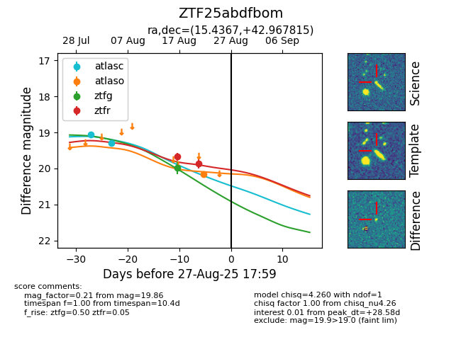

Target ZTF25abdfbom at 2025-08-26 10:53, see:
FINK: fink-portal.org/ZTF25abdfbom
Lasair: lasair-ztf.lsst.ac.uk/objects/ZTF25abdfbom
ALeRCE: alerce.online/object/ZTF25abdfbom
alt names
ZTF25abdfbom (ztf,fink)
coordinates:
equatorial (ra, dec) = (15.4367,+42.96782)
galactic (l, b) = (124.9368,-19.86380)
photometry
last atlasc=19.29, atlaso=20.16, ztfg=19.98, ztfr=19.86
2 atlasc, 1 atlaso, 1 ztfg, 2 ztfr detections
